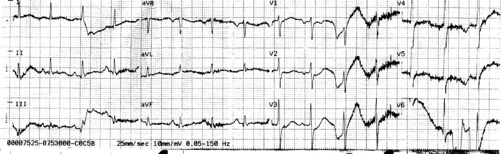
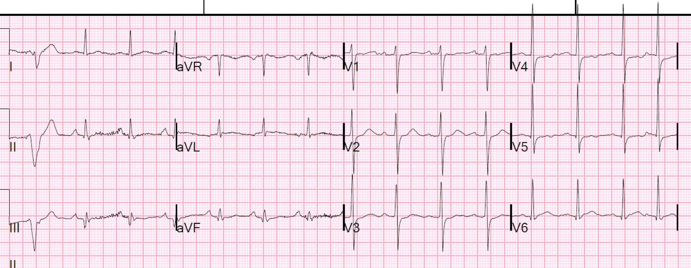
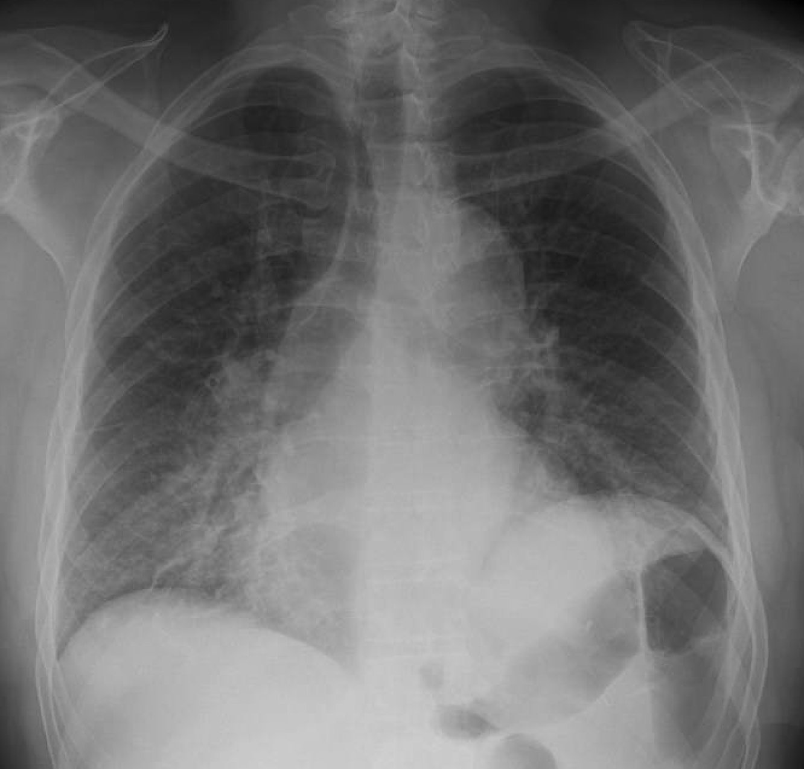
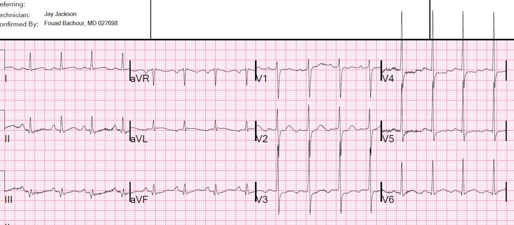
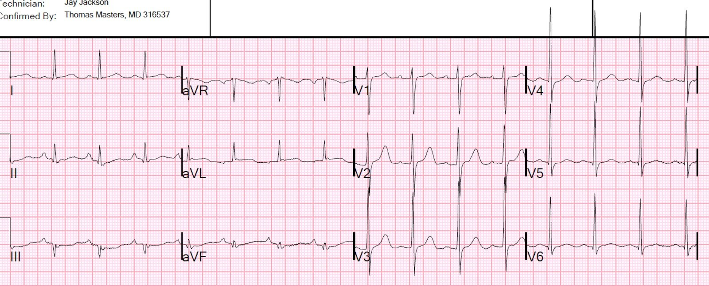
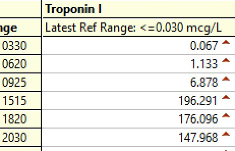

27/06/2021 — ST chênh xuống do thiếu máu cục bộ tối đa ở V1-V4 (so với V5-V6), dù dưới 0,1 milivôn, đặc hiệu cho nhồi máu cơ tim do tắc (so với thiếu máu cục bộ dưới nội tâm mạc không do tắc)
Bản dịch tiếng Việt của bài "Ischemic ST depression maximal in V1-V4 (vs. V5-V6), even if less than 0.1 millivolt, is specific for Occlusion Myocardial Infarction (vs. subendocardial non-occlusive ischemia)" – Dr. Smith’s ECG Blog. Giữ nguyên toàn bộ 6 hình ảnh và 4 video của bản gốc.
Đây là một ca từ nhiều năm trước mà tôi mới tình cờ tìm lại gần đây. Bệnh nhân bị suy tim do hậu quả của biến cố này.
Một người đàn ông 50 mấy tuổi, tiền sử chỉ có lạm dụng rượu và tăng huyết áp (không dùng thuốc), đến viện vì đau ngực trái đột ngột, đau nhói, lan xuống cánh tay trái, kiểu co thắt, lúc tăng lúc giảm nhưng không bao giờ hết hẳn. Lúc khởi phát có khó thở (SOB) và tăng công hô hấp. Ông đã uống 5 lon bia. Ông ít khi đi khám bệnh. Ông đã gọi 911.
Nhân viên cấp cứu ngoài viện đã ghi điện tâm đồ này:


Có nhiều nhiễu, nhưng có thể thấy rõ ST chênh xuống ở V2 và V3.
Không có ST chênh lên đáng kể.
Trong bối cảnh này, đây là hình ảnh chẩn đoán OMI thành sau.
Họ cho bệnh nhân dùng 2 liều nitroglycerin và chuyển đến khoa cấp cứu (ED).
Tại khoa cấp cứu, bệnh nhân “rên rỉ, quằn quại trên giường và ôm chặt ngực.”
Đây là điện tâm đồ đầu tiên tại khoa cấp cứu (không có điện tâm đồ cũ trong hồ sơ để so sánh):


Nhịp xoang và LVH
Có một chút (dưới 1 mm) STD ở V3 và V4.
Nếu STD này là do LVH hoặc do thiếu máu cục bộ dưới nội tâm mạc, chứ không phải do OMI thành sau, thì nó sẽ tối đa ở V5 và V6.
Vì V3 thường có ST chênh lên không do thiếu máu cục bộ ở trạng thái nền, nên BẤT KỲ mức ST chênh xuống nào cũng là bất thường và cần được coi là do thiếu máu cục bộ.
Ngoại lệ là khi STD là điều được dự đoán trước: trong RBBB, hạ kali máu, hoặc đã thấy trên các điện tâm đồ trước đó.
Nếu nó tối đa ở V1-V4, và biểu hiện của bệnh nhân phù hợp với ACS (như ca này chắc chắn là vậy), thì nó CÓ GIÁ TRỊ CHẨN ĐOÁN tắc mạch với độ đặc hiệu 90%
(Chúng tôi sắp có một bài báo chứng minh điều này).
Điều này đã không được nhận ra. Bệnh nhân được bắt đầu truyền nitroglycerin liên tục. Troponin I ban đầu trả về 0.67 ng/mL (URL = 0.030 ng/mL).
Bệnh nhân được chụp X-quang ngực:


Bác sĩ chẩn đoán hình ảnh đọc là “Mờ mô kẽ thùy dưới hai bên. Chẩn đoán phân biệt nghiêng về hít sặc/viêm phổi đang hình thành, khuyến cáo theo dõi cho đến khi hết.”
Với tôi, hình ảnh này trông giống phù phổi.
Bệnh nhân không ho và không sốt.
Đã làm siêu âm tại giường, với hàng chục đoạn clip, và thậm chí còn làm cả đánh dấu mô (speckle tracking). Dưới đây là một vài clip. (Xin lỗi vì các hiệu ứng âm thanh — giải thích thì phức tạp lắm)
Mặt cắt trục ngắn cạnh ức:
Clip này cho thấy rõ rối loạn vận động thành sau
Mặt cắt 4 buồng từ mỏm
Chức năng thất trái kém. Một số thành không co bóp và dày lên bình thường.
Đánh dấu mô (speckle tracking) mặt cắt 4 buồng từ mỏm
Chức năng thất trái rất kém
Phổi (đây chỉ là một bên, nhưng cả hai bên trông giống nhau)
Đường B điển hình của phù phổi, và không điển hình của viêm phổi
Siêu âm này sau đó được đọc chính thức đúng như những gì nó cho thấy:
Cửa sổ: Dưới mũi ức, trục ngắn cạnh ức, trục dọc cạnh ức và
4 buồng từ mỏm
Kết quả: Chức năng tâm thu thất trái kém, kèm rối loạn vận động thành bên.
Không có tràn dịch màng ngoài tim. Đường B chiếm ưu thế ở hai phổi cho thấy
phù phổi.
Kết luận: Chức năng tâm thu thất trái kém, kèm rối loạn vận động
thành bên. Không có tràn dịch màng ngoài tim. Đường B chiếm ưu thế ở hai
phổi cho thấy phù phổi.
Điện tâm đồ thứ 2 tại khoa cấp cứu được ghi lúc 3 giờ sau khởi phát đau ngực:


ST chênh xuống tối đa ở V2-V4 vẫn tồn tại, và thực ra còn sâu hơn một chút.
Ngoài ra còn có một chút STE tối thiểu ở aVL, kèm STD nhẹ, có thể có, ở các chuyển đạo thành dưới. Tự chúng thì những thay đổi này không có giá trị chẩn đoán vì không có hình thái điển hình (sóng T dẹt, có thể có sóng tái cực nhĩ giải thích cho ST chênh xuống). Nếu tôi thấy những thay đổi này mà không có STD ở V2-V4, tôi sẽ không coi chúng là gì cả, và ngay cả khi có STD ở chuyển đạo trước tim đó, tôi vẫn không tin chắc rằng đây là biểu hiện của thiếu máu cục bộ.
Lúc 5 giờ sau khởi phát, troponin lần 2 trả về 1.33 ng/mL, và một điện tâm đồ khác được ghi, giống hệt bản trước.
Điện tâm đồ này được ghi lúc 6 giờ sau khởi phát:


ST chênh xuống đã hồi phục. Mức STE bình thường như dự kiến nay đã xuất hiện ở V2-V4. Sóng T cao hơn. Tất cả những điều này dường như phản ánh tái tưới máu thành sau.
Tuy nhiên, triệu chứng vẫn kéo dài.
Khoa tim mạch không được mời hội chẩn kịp thời, nhưng đến một lúc nào đó thì họ cũng được mời. Phòng thông tim không được kích hoạt cấp cứu.
8 giờ sau khởi phát đau, bệnh nhân được đưa đi chụp mạch vành.
Diễn biến lâm sàng:
Bệnh nhân được điều trị kháng sinh cho “viêm phổi”, aspirin, heparin, zyprexa và morphin để giảm đau, và được xếp lịch chụp mạch vành vào một thời điểm thuận tiện.
Chụp mạch vành:
“ACS – Nhồi máu cơ tim không ST chênh lên. Đau dai dẳng dù đã điều trị nội khoa, được đưa cấp cứu đến phòng thông tim.”
Ghi chú của Meyers: hãy để ý trong hồ sơ của họ có nhiều sai lầm kinh điển của thế hệ STEMI: “Nhồi máu cơ tim không ST chênh lên” được dùng làm lý do vì sao bệnh nhân không cần tái tưới máu cấp cứu, trong khi đồng thời lại gọi đó là “cấp cứu” (sau 8 giờ!!!). Mọi khuyến cáo trên thế giới đều khuyến nghị rằng bệnh nhân ACS còn đau liên tục dù đã điều trị nội khoa cần được thông tim cấp cứu trong vòng 2 giờ, vậy mà theo kinh nghiệm của chúng tôi ở Mỹ thì điều này thường không xảy ra. Ngoài ra còn có vấn đề là họ đã dùng opioid và các thuốc hỗ trợ khác làm che lấp cơn đau, kéo dài thời gian cho đến khi nhận ra là “đau dai dẳng dù đã điều trị nội khoa”, càng ngăn cản bệnh nhân được điều trị tái tưới máu kịp thời.
Thủ phạm là tắc 100% LCX đoạn gần.
Đây là các kết quả troponin liên tiếp:


Troponin I đỉnh là 196 ng/mL (=196,000) ng/L). Đây là một ổ nhồi máu cơ tim KHỔNG LỒ. Vậy mà nó hầu như không thể hiện trên điện tâm đồ. Đây là một trong những mức troponin cao nhất tôi từng thấy, và có nhiều nghiên cứu dùng MRI cho thấy troponin đỉnh là một chỉ dấu khá tốt của kích thước ổ nhồi máu.
Siêu âm tim chính thức:
Phân suất tống máu thất trái ước tính là 39 %
Rối loạn vận động thành khu trú - dưới-bên .
Phì đại thất trái đồng tâm .
Rối loạn vận động thành khu trú - thành sau .
Rối loạn vận động thành khu trú - thành bên.
Giảm chức năng tâm thu thất trái mức độ vừa.
2 tháng sau, bệnh nhân nhập viện trong tình trạng phù phổi kèm cuồng nhĩ, và siêu âm tim chính thức cho thấy EF 20%
Vì sao điều này xảy ra? Làm thế nào mà một ca tắc mạch (nhồi máu cơ tim do tắc, OMI) gây mất một khối lượng cơ tim khổng lồ và dẫn đến suy tim lại có thể bị bỏ sót?
Bởi vì chúng ta bị mô hình STEMI (STEMI paradigm) thôi miên. “Nếu không có STEMI thì không có vấn đề cấp cứu, và bệnh nhân có thể chờ.”
Vì sao lẽ ra chúng ta phải nhận ra đây là nhồi máu cơ tim do tắc (OMI)? (Đây không phải STEMI)
1. Bệnh nhân không có tiền sử tim mạch nào ngoài tăng huyết áp.
2. Triệu chứng điển hình của nhồi máu cơ tim
3. Điện tâm đồ cho thấy ST chênh xuống tối đa ở V2-V4, đây là dấu hiệu chẩn đoán OMI thành sau.
4. Lẽ ra chúng ta không nên bị đánh lừa bởi kết quả đọc “viêm phổi” của khoa chẩn đoán hình ảnh. Bệnh nhân không ho, không sốt, X-quang ngực trông giống phù phổi, siêu âm cho thấy các đường B điển hình của phù phổi.
5. Chúng ta đã không chú ý tới siêu âm tim tại giường, vốn tự nó đã đủ để chẩn đoán OMI.
6. Bệnh nhân được dùng morphin, thuốc này có liên quan với kết cục xấu hơn ở NonSTEMI (có lẽ vì nó đánh lừa bạn rằng bạn đã điều trị được thiếu máu cục bộ). Tôi chỉ dùng morphin sau khi đã quyết định chuyển bệnh nhân lên phòng thông tim).
7. Say rượu? Điều đó có thể đã góp phần làm các bác sĩ lâm sàng bị thiên lệch.
Trong bài báo này, chúng tôi đã chứng minh rằng việc chuyên gia đọc điện tâm đồ dựa trên các tiêu chuẩn mở rộng cho nhồi máu cơ tim do tắc (vượt ra ngoài ST chênh lên) có độ nhạy cao hơn gấp đôi so với tiêu chuẩn STEMI, với độ đặc hiệu tương đương, trong chẩn đoán nhồi máu cơ tim do tắc. Nhiều ca nhồi máu cơ tim do tắc trong số này là ở thành sau:
Accuracy of OMI ECG findings versus STEMI criteria for diagnosis of acute coronary occlusion myocardial infarction (Độ chính xác của các dấu hiệu OMI trên điện tâm đồ so với tiêu chuẩn STEMI trong chẩn đoán nhồi máu cơ tim do tắc mạch vành cấp)
Chúng tôi đã công bố bản tóm tắt này tại SAEM (các chi tiết trong toàn văn bản thảo rất thú vị; bản thảo đang được bình duyệt tại Journal of the American Heart Association):
ST chênh xuống do thiếu máu cục bộ tối đa ở V1-V4 (so với V5-V6), dù dưới 0.1 millivolt, đặc hiệu cho nhồi máu cơ tim do tắc (so với thiếu máu cục bộ dưới nội tâm mạc không do tắc)
TÓM TẮT
Bối cảnh:
Nhồi máu cơ tim do tắc (OMI) thành sau và thành bên là những thể hay bị bỏ sót nhất, với >50% các ca tắc động mạch mũ không được tái tưới máu cấp cứu và có tỷ lệ tử vong gấp đôi, một phần vì OMI thành sau không được tiêu chuẩn STEMI nhận diện tốt. ST chênh xuống (STD) tối đa ở các chuyển đạo V1-V4 (STDmaxV1-4), trái ngược với STD tối đa ở V5 và V6, đã được đề xuất là một chỉ điểm có thể có của OMI thành sau. Chúng tôi tìm cách đánh giá độ chính xác chẩn đoán của STDmaxV1-4 đối với OMI.
Phương pháp:
Chúng tôi thực hiện một nghiên cứu hồi cứu trên một quần thể ACS nguy cơ cao. OMI được định nghĩa theo các nghiên cứu trước là một tổn thương thủ phạm cấp kèm dòng chảy TIMI 0-2, hoặc dòng chảy TIMI 3 cộng với troponin T đỉnh >1.0 ng/mL hoặc troponin I >10 ng/mL. STEMI được định nghĩa theo Định nghĩa toàn cầu thứ 4 về nhồi máu cơ tim. Các điện tâm đồ được đọc để tìm OMI, cũng như các đặc điểm khác nhau của ST chênh xuống, mà không biết kết cục (làm mù).
Kết quả:
Trong 808 bệnh nhân, có 265 ca OMI, trong đó 108 ca (41%) đáp ứng tiêu chuẩn STEMI. 118 bệnh nhân (15%) có STDmaxV1-4 “nghi do thiếu máu cục bộ”, trong số đó 106 ca (90%) có tổn thương thủ phạm cấp, 99 ca (84%) có OMI, và 95 ca (81%) được làm PCI. STDmaxV1-4 nghi do thiếu máu cục bộ có độ đặc hiệu 97% đối với OMI. Trong 99 ca OMI được phát hiện nhờ STDmaxV1-4, 34% có STD <1mm, và chỉ 47 ca (47%) kèm theo tiêu chuẩn STEMI, trong đó 17 ca (36%) được nhận diện bằng STDmaxV1-4 sớm hơn so với bằng tiêu chuẩn STEMI, với trung vị 1.00 giờ. Không có mối liên quan giữa hướng sóng T và OMI. Mặc dù kích thước ổ nhồi máu, tỷ lệ dòng chảy TIMI 0/1 và các can thiệp mạch vành giống nhau về mặt thống kê, bệnh nhân OMI STEMI âm tính (STEMI(-) OMI) kèm STDmaxV1-4 ít được thông tim trong vòng 90 phút hơn một cách có ý nghĩa so với bệnh nhân OMI STEMI dương tính (STEMI(+) OMI) kèm STDmaxV1-4 (46% so với 68%, p=0.028).
Kết luận:
Ở bệnh nhân ACS nguy cơ cao, độ đặc hiệu đối với OMI của STDmaxV1-4 nghi do thiếu máu cục bộ là 97%. Tiêu chuẩn STEMI bỏ sót một nửa số ca OMI được phát hiện nhờ STDmaxV1-4. Những dữ liệu này ủng hộ rằng bất kỳ ST chênh xuống do thiếu máu cục bộ nào tối đa ở V1-V4 trong ACS đều là do OMI cho đến khi chứng minh được điều ngược lại.